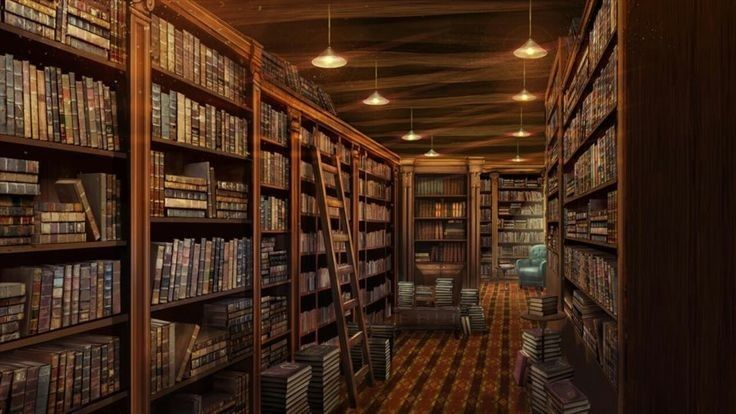

Kristein Cassey S. Balane
I'm Kris, a person who enjoys finding the best bookstores in random places around Metro Manila. As a bookworm, I had to find where I could get books.

The Story Behind Our Shop
Our shop was created because of my love for animals and my interest in learning more about different species. I wanted to create a place where people can discover interesting pets while also appreciating the beauty and uniqueness of animals.
The shop represents my passion for animals, especially the unusual and often misunderstood ones. Through this shop, I hope to share my interests with other people and encourage them to learn more about animals.
We also promote free adoption because every animal deserves a safe and loving home.